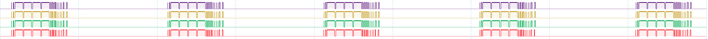
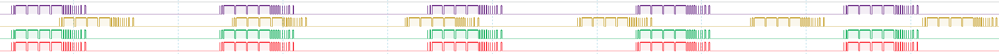
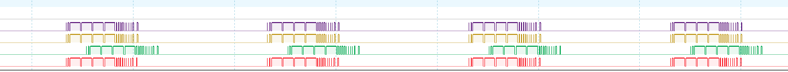

Synchronization and triggering
The O3R platform is designed to handle very precise timing at the single system level: a system consists of a VPU and up to 6 heads connected via their respective ports. All imagers (only the 3D TOF sensors, not the RGB ones) are triggered internally by the Trigger Control Unit (TCU). This ensures precise timing with a higher accuracy than can normally be achieved with an external tool, for example for triggering ifm O3D cameras, which have to be synchronized with software trigger commands sent over a network.
Per-system triggering can be handled in either RUN or IDLE states.
In RUN state the system is triggered on a regular time base, defined by the framerate and delay parameters.
IN IDLE state the system is triggered once a software trigger signal is received.
For multiple separate systems, software trigger has to be used, or systems can be synchronized via NTP (network time protocol) if NTP accuracy is sufficient.
O3R states and synchronization
The O3R system uses different states to suit different timing principles.
State |
Comment |
|---|---|
RUN |
Free running state: the cameras run at the desired framerate, synchronized to the same time base |
IDLE |
State used for triggering: the camera is inactive until a trigger signal is received |
Note
The “CONF” and “ERROR” state are not relevant to time synchronization and are be ignored in this document.
RUN state
All cameras set to “RUN” state and configured to the same framerate are automatically synchronized. A delay can be set between groups of synchronized cameras.
IDLE state
This state is required for sending software triggers to a camera or camera group. The cameras active illumination and imager are inactive until a trigger command is received.
Configuration
The time synchronization and the trigger functionalities can be configured with the following settings:
Parameter |
Value |
Description |
|---|---|---|
|
1/sec |
Acquisition framerate |
|
ms |
Time offset to first trigger group |
|
[0,6] |
Software trigger group |
Framerate
All cameras configured to the same framerate are always synchronized.
The figure below shows the signals received from four different cameras running at 10Hz.

The figure below shows the signals received from three different cameras running at 10Hz. The third camera (yellow signal) is running at 12 Hz.

Delay
The delay is the parameter that defines the minimum amount of time, in milliseconds, between the default framerate loop and the imager trigger. As shown in the below image, the second camera (in green) is running at 10 fps with a delay of 10 ms.

Software trigger group
Cameras belonging to the same group, that is having the same value for swTriggerGroup parameter, are synchronized (when in “RUN” state) and triggered simultaneously (when in “IDLE” state) when any one of the camera in the group is triggered.
By default the value of swTriggerGroup is 0 which means that the port is triggered independently from all the other ports.
Overall system latency
Typical overall sensor system latency depends on a number of variables:
Internal system latency and jitter:
jitter of the system when in free running state,
delay between when the trigger command is sent and when it is received.
External latency:
Network latency when sending trigger signals,
Network latency when sending data via the network.
Data processing latency: depends on the algorithm, application and hardware.
Repeatability
Below are the results of repeatability tests performed at ifm on prototype devices.
TH_FRAMERATE_JITTER = 1E-3 # sec
TH_FRAMERATE_ABS_DIFF = 3E-2 # sec
TH_DELAY_JITTER_MAX = 2E-3 # sec
TH_DELAY_TWO_CAMS_JITTER_DIFF = 2E-4 # sec
TH_DELAY_REPETEABILITY = 5E-4 # sec
TH_LONG_EXP_BOUNDARY = 0.05 # percent
LONG_EXP = 0.005 + 0.0006 # MAGIC NUMBER EXP time [sec] plus read-out
TH_ONE_ENVELOPE_JITTER = 1E-4 # sec
Framerate precision and jitter
Input values are envelope signals of one camera as recorded with a oscilloscope.
framerate = 1/np.nanmean(np.diff(time3Phase_b1)) # time3Phase_b1 is the oscilloscope data
framerate_std_dt = np.nanstd(np.diff(time3Phase_b1))
# assert envelope timing repeatability is high: < 1E-3 sec
# assert(long_std < 1E-3)
tv = framerate_std_dt
th = TH_FRAMERATE_JITTER
if (tv > th):
ERRORS.append("envelope timing repeatability failed: {framerate_std_dt:f}\n test value: {tv} - threshold: {th}".format(framerate_std_dt=framerate_std_dt, tv=tv, th=th))
# assert(abs(FRAMERATE - long_mean) < 2E-4 sec)
tv = abs(1/framerate_target - 1/framerate)
th = TH_FRAMERATE_ABS_DIFF
if (tv > th):
ERRORS.append("framerate abs check failed: {framerate}\n test value: {tv} - threshold: {th}".format(framerate=framerate, tv=tv, th=th))
Outcome
The jitter for an O3R camera head has been found to be about 1E-3 sec, and the framerate about 2E-4 sec.